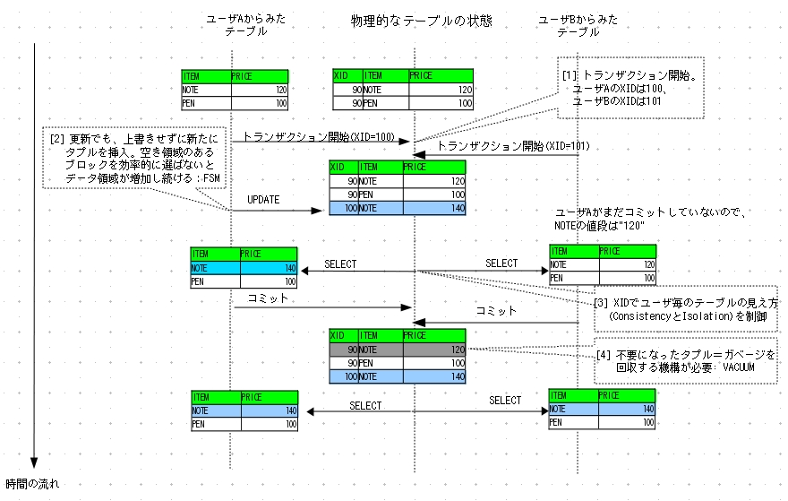
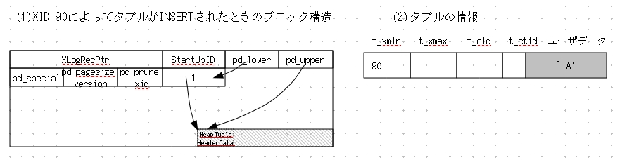
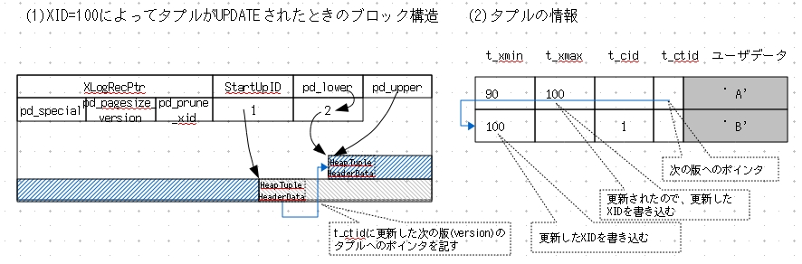
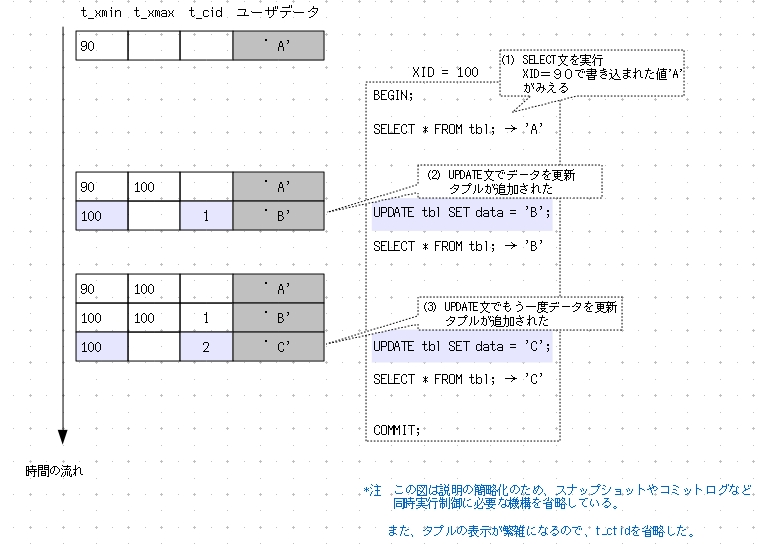
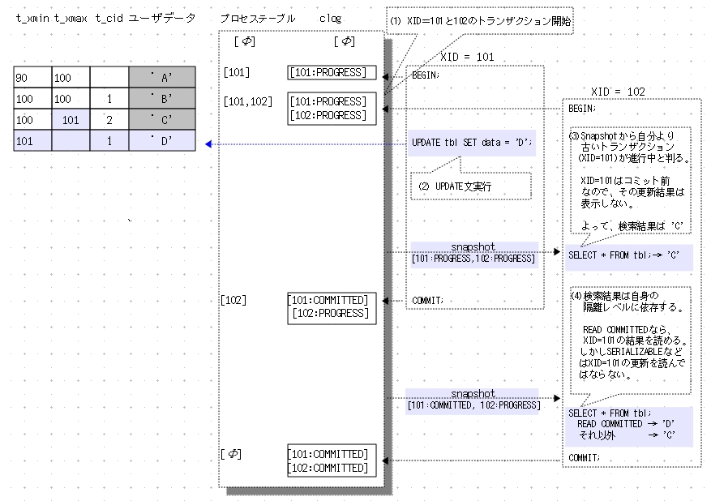

トランザクションIDと同時実行制御
今読むと記述が甘い。間違いもある。
PostgreSQLの同時実行制御と、その中核的概念であるトランザクションID(XID)について説明します。
PostgreSQLのトランザクションID(XID)
トランザクションID(XID)はトランザクション管理の根幹を担う重要な値です。
PostgreSQLに限らず、すべてのDBMSが独自に実装しています。
PostgreSQLのXIDは32[bit]の符号無し整数で、0から2^32-1(約42億9千万)までの範囲の値をとります([<脚注16>])。
トランザクションが開く毎にXIDが発行され、その値は1ずつ増えていきます。
ここで32[bit]というXIDのサイズが問題になります。実運用では42億9千万トランザクションを超えて稼働しつづけることも稀ではありません。
単純にXIDの大小関係で過去と未来を識別すると、(42億9千万トランザクション発行した後に)XIDが2サイクル目に入ってもう一度小さな値を使いはじめた瞬間に、トランザクション管理が破綻します。
この問題を避けるため、PostgreSQLは2つの工夫がなされています。
- 無限の過去を意味するXID=2を導入
VACUUM処理時、
現在のXIDより数千万(パラメータvacuum_freeze_max_ageで設定)以前の(トランザクション処理が終了した)XIDをすべて"2"につけ換え、
"無限の過去のデータ"として保存し直す。
これを「FREEZE処理」という。
- XIDの過去と未来の識別方法を変更
最大値(2^32-1)の次のXIDは3、次は4、という具合にXIDを循環させて、32bitの整数空間を繰り返し利用する。そして、あるXIDにとって過去のXIDとは、そのXIDよりも21億(正確には2^31-1)以前の値と解釈する(未来のXIDとは21億先までの値)。
よって定期的にVACUUM処理を行い、どのトランザクションからも操作されなくなったタプルのXIDを"凍結"していれば、XIDが3から2^32-1の範囲を循環しながら、トランザクション管理は破綻なく続きます。
VACUUMにおけるFREEZE処理は[<2-07>]で解説します。
| 脚注16 |
本書はLOCKの仕組みを省略したので触れませんが、
内部的にLOCKの処理を補助するため"VIRTUAL TRANSACTION ID"という値も用います。
詳細は、src/backend/storage/lmgr/READMEを参照してください。
|
MVCCによる同時実行制御
PostgreSQLをはじめ現代の多くのRDBMSは、同時実行制御の方式としてMVCC(Multi-Version Concurrency Control: 多版式同時実行制御)を採用しています([<脚注17>])。
MVCCにもいくつかの実装方式があり、PostgreSQLが採用しているのは追記型です[<脚注18>]。
| 脚注17 |
他の方式としては、ロックを使った同時実行制御があります。これはDB2やSybaseなど古くから実装されたシステムに多い方式です。
|
| 脚注18 |
SQLiteも追記型MVCCです。MySQLのInnoDBストレージエンジンやOracleはロールバックセグメント型MVCCです。
|
追記型とは、データの挿入(INSERT)だけでなく更新(UPDATE)のときも、
古いデータを無効にするだけで削除は行わず、新たにデータを追加するデータ管理方法です。
簡単に追記型を説明します([<図2-27>])。詳細は後述します。
[<図2-27>] 追記型MVCCの仕組み

|
| [1] |
ユーザAとBが同じテーブルにアクセスする。
ユーザAが先にトランザクションを開始し、そのトランザクションID(XID)は100である。ユーザBのXIDは101である。
|
| [2] |
ユーザAがテーブルのデータを更新する。
このとき古いデータタプルを削除せず、新しいデータタプルをデータ領域に追記する。
|
| [3] |
ユーザAはまだトランザクションをコミットしていないので、
ユーザBがテーブル検索するとユーザAの更新は反映されず、
ユーザBのトランザクション開始時点のデータが見える。
自分がどのように見えるかは、データを更新したXIDと自身のXIDとの比較で分かる。
|
| [4] |
ユーザAとBがどちらもトランザクションをコミットすると、
更新された古いデータタプルは不要になる。
更新毎に不要なタプルが溜っていくので、これを削除して空き領域を作る機構が必要になる。
|
追記型はデータが際限なく増えていくので、
不要なデータタプルを回収する機構が必要です。その機構を「VACUUM」と呼びます。
データタプルの追記は、次々と新しいブロックに追記するのでなく、
空き領域のあるブロックに追記し、無闇にファイルサイズが大きくなることを防がねばなりません。
空き領域を効率的に捜し出すために、空き領域マップ(FSM: Free Space Map)があります。
VACUUMと空き領域マップは[<2-07>]で解説します。
ヒープタプルの構造
追記型MVCCを理解するために必要となる、ヒープタプル(レコードデータ)の構造を説明します。
ヒープタプルのヘッダ部分は構造体
で定義されています[<脚注19>]。
これを図示すると[<図2-28>]のようになります。
| 脚注19 |
HeapTupleHeaderDataの定義はsrc/include/access/htup.h。
|
ここでは、以降の説明で必要なデータ項目のみ説明します。
| 項目 | 説明 |
| t_xmin | このタプルを追記したXID |
| t_xmax | このタプルを削除、もしくは更新したXID |
| t_cid | そのトランザクション内で、何番目の追記か |
| t_tcid | 追記された新しいタプルへのポインタ |
これら以外のデータについて、詳細はソースコードのコメントを参照してください。
たとえばt_infomaskはそのタプルがNULLを持つか否かなど様々な情報を保持しています。
追記型MVCC
追記型MVCCの動作を説明します。
はじめに単一トランザクション内でのタプルの追記について説明します。その際、説明を容易にするため、このセクションでのみ使用する表記法も説明します。
次に２つのトランザクションでの同時実行制御について説明します。
単一トランザクション内でのデータの追加、更新
まず、このセクションでのみ使用するタプルの表記法を示します([<図2-29>])。
[<図2-29>] ブロック内のタプルの表記法(1)

|
[<図2-29>](1)は1レコードしかデータを持たないテーブルtblのブロックです。
現時点の値'A'はXIDが90のときにINSERTされたとします。
このタプルの状態を、説明に必要な部分だけ取り出して[<図2-29>](2)のように表現します。
t_xminにはこのタプルを書き込んだトランザクションのXIDが書かれています。
このタプルはまだ更新されていないのでt_maxには値がありません。
次に、XID=100のトランザクションがこのデータを更新したとします([<図2-30>])。
[<図2-30>] ブロック内のタプルの表記法(2)

|
新たにタプルが追記され、タプルは計２つになります。
[<図2-30>](2)において、先のタプルは更新されたので、t_maxには更新したトランザクションのXID(100)が書かれています。
またt_ctidには新たに追記されたタプルへのポインタが入ります。
レコードの更新履歴は、このt_ctidを辿ればすぐに判ります。
新たに追記したタプルのt_minに更新したトランザクションのXID(100)が書かれます。
また、このトランザクションによる１番めのコマンドなので、t_cidに1が書かれます。
これらを時系列に沿って描き直します([<図2-31>])。
[<図2-31>] 追記型による同時実行制御の仕組み(1)

|
(1) はじめに'A'というデータが書き込まれていた。
XID=100のトランザクションを開始し、SELECT文を実行すると'A'がみえる。
(2) 次にUPDATE文で値を'B'に更新すると、
古いデータ'A'を保存しているタプルのt_maxに更新したトランザクションのXID(100)を記入し、
新たにデータ'B'を保存するタプルを追記する。
(3) さらにUPDATE文で値を'C'に更新すると、またタプルを追記する。
同一トランザクション内でのSQL文はt_cidによって番号付けされ、区別する。
以上、単一トランザクション内でのタプルの追記について簡単に説明しました。
ここまではタプルの追記に注目して説明するため、同時実行制御に必要なスナップショットとCLOG(コミットログ)を省略しました。
次に説明する複数トランザクションでのタプルの追記では、これらを省略することなくPostgreSQLの同時実行制御について説明します。
複数トランザクションにおける同時実行制御
複数トランザクションが実行されている状況での、PostgreSQLの同時実行制御について説明します([<図2-32>]参照)。
[<図2-32>] 追記型による同時実行制御の仕組み(2)

|
はじめに、トランザクションの状態を保持するCLOG(コミットログ)とプロセステーブルについて説明します。
CLOGはトランザクション毎の状態(IN_PROGRESS, COMMITTED, ABORTED, SUB_COMMITTED)を保持します。
トランザクションの状態は、処理中は"IN_PROGRES"、COMMITすると"COMMITTED"、ABORTすると"ABORTED"となります。
SAVEPOINT設定中は"SUB_COMMITTED"です。
トランザクションが開始される度、CLOGに情報が追加されます。
CLOGに書き込まれた古い(FREEZEされた)XIDの情報は、VACUUM処理が削除します。
なお、CLOGはCHECKPOINT毎にデータベースクラスタのサブディレクトリpg_clog以下にファイルとして保存します。
プロセステーブルは、postgresプロセスが実行中のトランザクションIDを保持しています。
トランザクションが開始されると、XIDと(そのトランザクションの)開始時に、既に開いている全トランザクションのXIDを保存します。
これがそのトランザクションにとって最初のスナップショットになります。
例えば、XID=102のトランザクションが開始するとき、既にXID=101が開いているので、
XID=102のスナップショットにはXID=101と102が含まれます。
(XID=101は開始時に他のトランザクションが走っていないので、最初のスナップショットはXID=101だけである)
以下、具体的に２つのトランザクションによる同時実行制御を説明します。
(1) XID=101と102の２つのトランザクションが開始した。
(2) XID=101のトランザクションがUPDATE文を実行した。
(3) その直後、XID＝102のトランザクション内でSELECT文を実行する。
その際、スナップショットから自分より古いトランザクション(XID=101)が進行中と判る。
XID=101はコミット前なので、その更新結果は表示できない。
よって検索結果はXID=101の更新前の 'C'を表示する。
次に、XID=101のトランザクションがコミットした後の挙動を説明します。
(4) XID=102のトランザクションがSELECT文を実行する。
スナップショットを得ると、自分より古いトランザクションX=101はCOMMITTEDで終了したことがわかる。
ここで検索を行うが、XID=102の検索結果は自身の隔離レベルに依存する。
READ COMMITTEDなら、XID=101の結果を読むことができるので、検索結果は'D'となる。
しかしSERIALIZABLEなどはXID=101の更新を反映してはならないので、検索結果は'C'となる。
ビジビリティマップ(Visibility Map)
トランザクションの隔離を実現するには、
スナップショットを得てから、各タプルがそのトランザクション内で可視かどうかを逐次検査しなければなりません。
これは非常に手間のかかる処理ですが、
もしもブロック内に不要なタプルがひとつも存在せず、
且つどのトランザクションも更新していないなら、
そのブロックのタプルはすべて可視なので検査をスキップできます。
そこでメモリ上、テーブルのブロックごとに1[bit]のデータ領域を確保し、
上記の条件(不要なタプルが存在しない && どのトランザクションも更新してない)を満たすブロックには"0"、
それ以外は"1"を保存する機能がバージョン8.4でサポートされました([<脚注20>])。
これをビジビリティマップ(Visibility Map)と呼びます。
このビジビリティマップを利用してトランザクション内の可視の検査を効率化できます。
また、バージョン9.2でサポートするIndex-Only Scan([<2-08>])でも重要な役割を担っています。
| 脚注20 |
テーブルの先頭ブロックから順に1[bit]づつ割り当てるので、確保する領域も非常に小さく、またブロック検索も効率的にできます。
|
なお、データベースクラスタ内にはテーブルファイルXXXに対してXXX_vmというファイルが存在します。
これはテーブル毎にメモリ上のビジビリティマップのデータをファイルとして保存しているものです。
例えばテーブルsimpletblは、テーブルデータを保存するファイル"18740"とビジビリティマップファイル"18740_vm"を持ちます。
postgres> ls -la 18740 18740_vm
-rw------- 1 postgres users 8192 Mar 23 14:09 18740
-rw------- 1 postgres users 8192 Mar 23 14:13 18740_vm
参考文献
- PostgreSQL解析資料 MVCC 井久保氏
http://ikubo.x0.com/PostgreSQL/pdf/IK09-mvcc.pdf
Last-modified: 2018-9-8